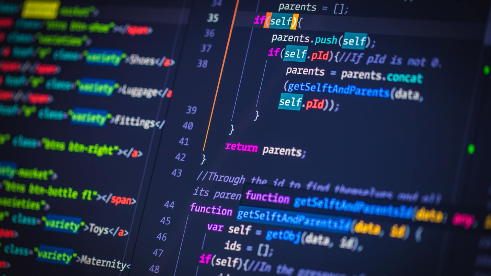
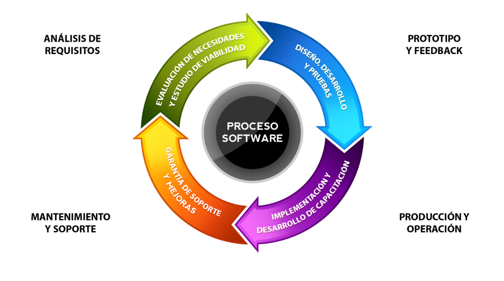

Ingeniería en Software
La Ingeniería en Software es la disciplina encargada del desarrollo, diseño, mantenimiento y gestión de sistemas de software de manera sistemática.

Ciclo de Vida del Software
El ciclo de vida del desarrollo del software es el proceso que se sigue para crear un sistema, incluyendo etapas como el análisis, diseño, desarrollo, pruebas y mantenimiento.

Fases del Ciclo de Vida del Software
- Análisis: Se definen los requisitos.
- Diseño: Se estructura la solución.
- Desarrollo: Se programa el sistema.
- Pruebas: Se detectan errores.
- Mantenimiento: Se mejora el sistema.
Fase de Análisis
En la fase de análisis se identifican las necesidades del usuario y se definen los requisitos del sistema. Esta etapa es fundamental, ya que establece qué debe hacer el software antes de comenzar su diseño y desarrollo.
Fase de Diseño
En la fase de diseño se define la estructura del sistema, incluyendo la arquitectura, los componentes y la forma en que interactuarán entre sí. En esta etapa se crean modelos y diagramas que servirán como guía para el desarrollo del software.
Fase de Desarrollo
En la fase de desarrollo se lleva a cabo la implementación del sistema mediante la programación. Los desarrolladores escriben el código basándose en los diseños y requisitos definidos en etapas anteriores.
Fase de Pruebas
En la fase de pruebas se verifica que el software funcione correctamente y cumpla con los requisitos establecidos. Se identifican y corrigen errores para garantizar la calidad del sistema antes de su implementación.
Fase de Mantenimiento
En la fase de mantenimiento se realizan actualizaciones, mejoras y correcciones al software después de su implementación. Esta etapa asegura que el sistema siga funcionando correctamente y se adapte a nuevas necesidades.